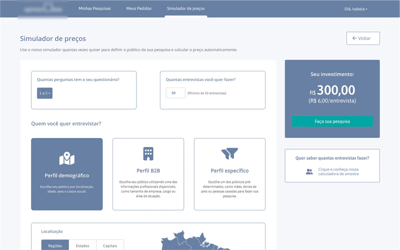
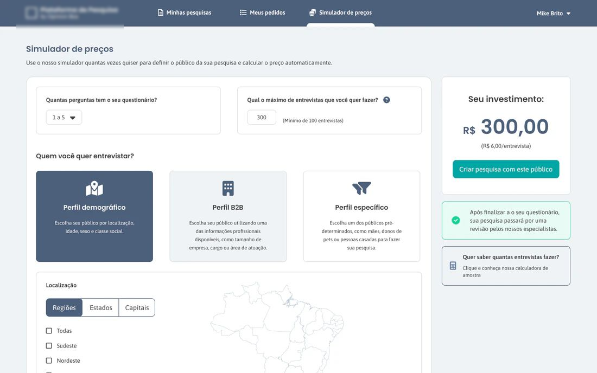
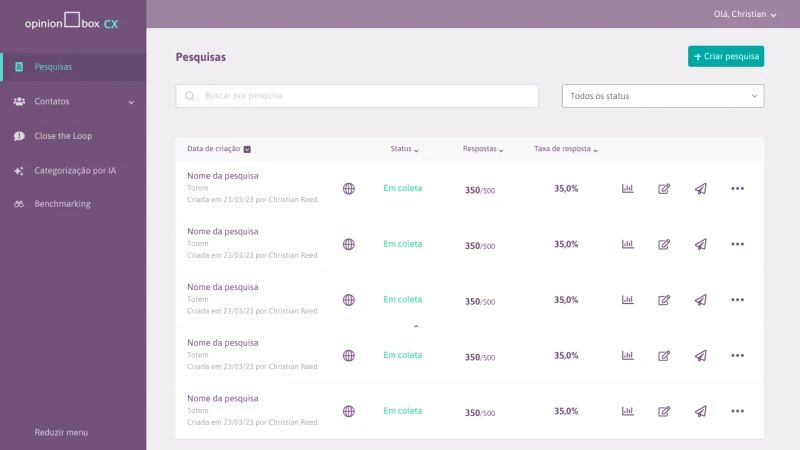
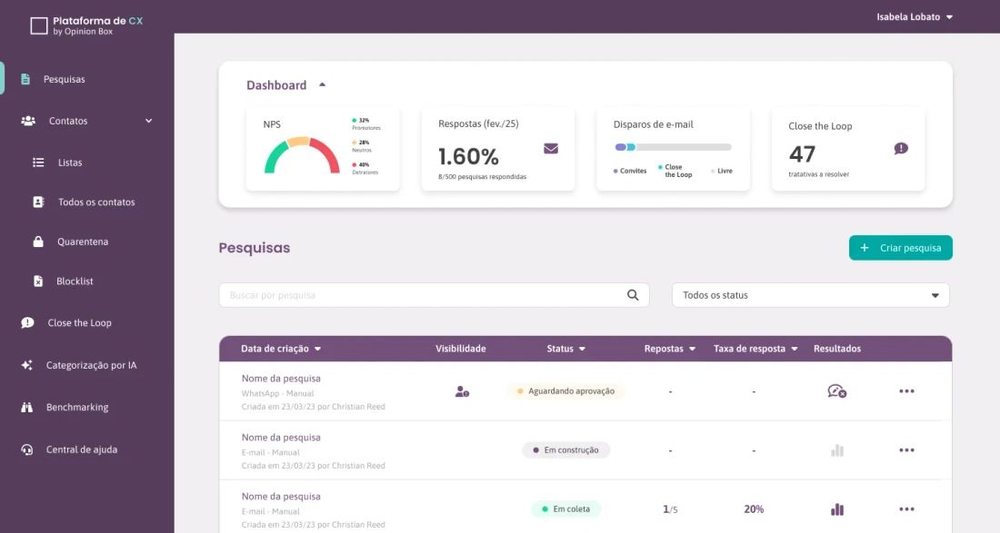

O Design System não nasceu para deixar as telas iguais. Nasceu para reduzir o custo de fazê-las diferentes.
Produtos distintos da empresa haviam evoluído com bibliotecas, componentes e padrões próprios. O trabalho foi criar uma linguagem compartilhada que aumentasse consistência para usuários e previsibilidade para design e desenvolvimento.
Fragmentação
Interfaces, estados e componentes diferentes para resolver problemas semelhantes em produtos do mesmo ecossistema.
Fundação + governança
Tokens, escalas, componentes core, documentação e rituais para garantir adoção contínua.
Escala compartilhada
Mais consistência, menos tempo de criação e revisão e menor retrabalho entre design e desenvolvimento.
Cada produto parecia pertencer a uma empresa diferente.
A empresa expandiu sua atuação para CX, áreas administrativas, plataforma de coleta, área do cliente e outras frentes. Esse crescimento aconteceu em ritmos diferentes e com bibliotecas visuais independentes.
Para o usuário, a navegação entre produtos trazia mudanças de interface, comportamento e hierarquia. Para os times, o custo aparecia em componentes recriados, handoffs inconsistentes e dificuldade de manutenção.
Antes de desenhar a biblioteca, precisávamos medir a dívida.
Começamos por uma auditoria completa das interfaces existentes. Catalogamos componentes, padrões visuais, estados e redundâncias e cruzamos esse diagnóstico com entrevistas com designers, desenvolvedores e stakeholders de produto.
Visual
Divergências em ícones, tipografia, espaçamentos, estados e hierarquia.
Operação
Designers recriavam componentes e desenvolvedores precisavam interpretar padrões diferentes em cada produto.
Produto
A experiência fragmentada enfraquecia a percepção de uma plataforma única.
Também analisamos referências como Material 3, Atlassian e IBM Carbon para entender práticas de documentação, estrutura e governança que poderiam ser adaptadas à realidade da empresa.
A biblioteca era só uma parte. O produto real era o processo de adoção.
O sistema foi pensado para ser modular, documentado e fácil de adotar. A intenção era reduzir decisões repetidas sem transformar o Design System em uma camada burocrática.
Tokens como fundação
Cores, tipografia e espaçamentos estruturados para garantir coerência e preparar futuras integrações com Figma Variables.
Escalas antes de componentes
Uma escala tipográfica e um sistema de espaçamento únicos reduziram variações antes mesmo da biblioteca crescer.
Core baseado em uso real
Botões, inputs, modais, tabelas, dropdowns e estados foram priorizados a partir das necessidades mais recorrentes dos produtos.
Documentação + governança
Figma, Notion e novos rituais de revisão deram contexto de uso e criaram uma fonte comum de verdade.
O valor do sistema aparece quando a mesma regra atravessa produtos diferentes.
Os primeiros componentes foram testados em contextos reais, o que permitiu ajustar proporções, hierarquias e comportamentos antes de consolidar padrões. As comparações abaixo mostram a mudança de linguagem em duas frentes do ecossistema.
De uma interface com padrões próprios para uma composição alinhada à nova linguagem visual, com hierarquia, navegação, cards e feedbacks mais consistentes.


A mesma fundação foi aplicada em um produto com navegação lateral, dashboard e tabelas, demonstrando que consistência não significava replicar layouts.


Padronizar não era fazer todos os produtos parecerem idênticos. Era garantir que decisões equivalentes tivessem a mesma lógica, o mesmo nível de qualidade e uma origem compartilhada.
O sistema foi validado no trabalho real, não em uma página de documentação.
Os componentes foram aplicados em telas reais para avaliar não apenas a aparência, mas a eficiência do sistema em uso, o fluxo de handoff e a redução de inconsistências durante os sprints.
Esses sinais ajudaram a validar o Design System como infraestrutura de produtividade e qualidade, e não apenas como uma melhoria estética.
Um sistema só escala quando deixa de pertencer a uma pessoa.
O Design System foi desenvolvido em parceria com a designer Isabela Lobato. Trabalhamos na estruturação de guidelines, revisão de microinterações e equilíbrio entre padronização e flexibilidade.
A colaboração com front-end e produto também consolidou novos fluxos de design review e uma visão compartilhada sobre a qualidade das entregas.
Tokens, tipografia, espaçamentos e princípios de composição.
Componentes core, estados, comportamentos e documentação de uso.
Critérios para adoção, manutenção e evolução do sistema entre produtos.
Design review, alinhamento com desenvolvimento e construção conjunta com Isabela Lobato.
A base visual virou base operacional.
Após o lançamento, o Design System se tornou a base visual e funcional do ecossistema da empresa, com adesão do time de front-end e novos fluxos de revisão mais eficientes.
Menos retrabalho
Design e desenvolvimento passaram a partir de uma base comum.
Mais coerência
Produtos diferentes ganharam uma linguagem reconhecível dentro do mesmo ecossistema.
Mais escala
Novas entregas passaram a reutilizar padrões em vez de reiniciar decisões de interface.
Mudança cultural
Design passou a operar mais como linguagem compartilhada e menos como entrega isolada.
Design Systems escalam quando conectam três coisas ao mesmo tempo: uma linguagem visual clara, uma operação simples de manter e confiança suficiente para que diferentes times queiram usá-los.